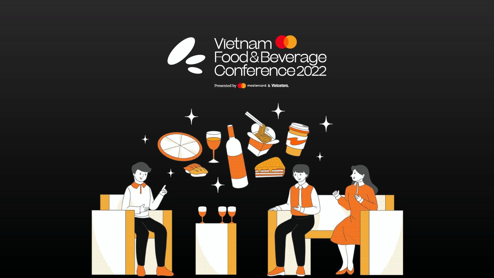
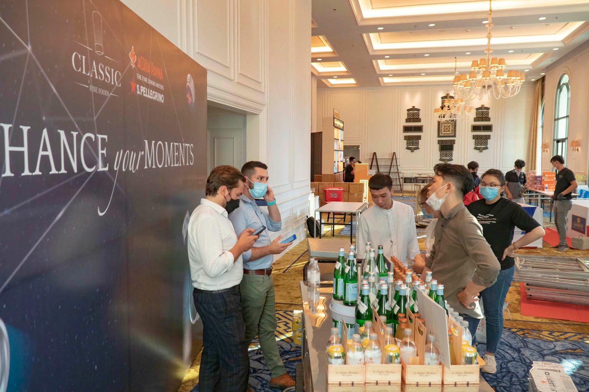
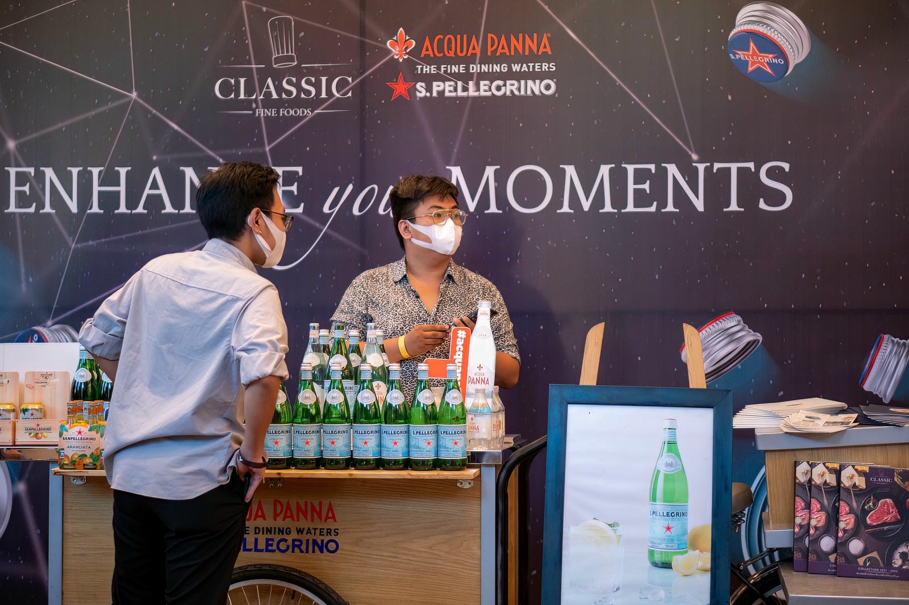
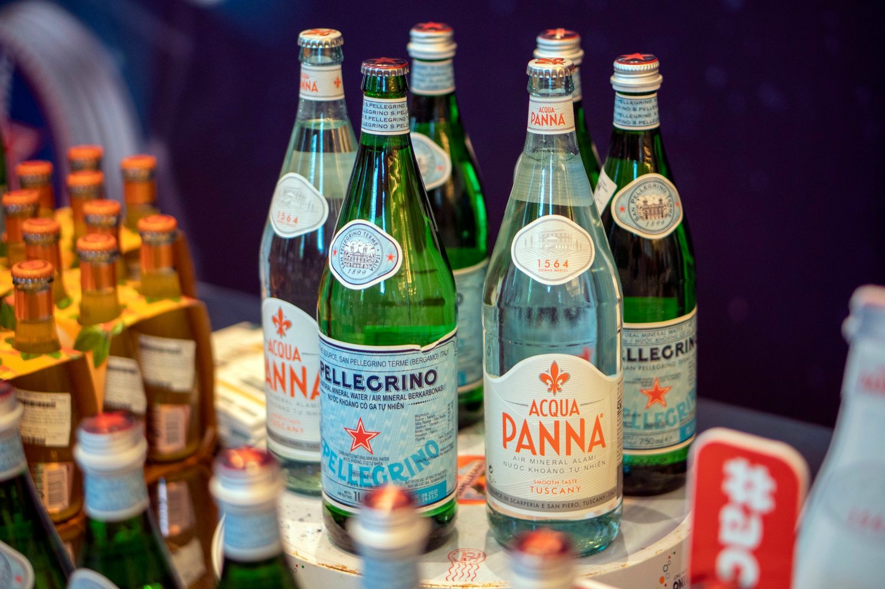
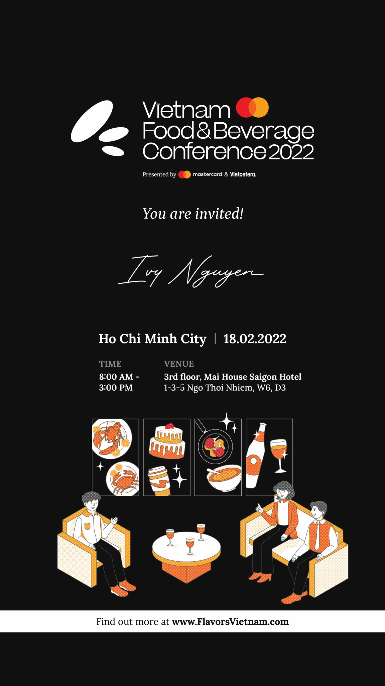

CASE STUDY 01
Vietnam Food & Beverage Conference 2022

- Event name
- Vietnam Food & Beverage Conference 2022 (presented by Mastercard & Vietcetera)
- Date
- 18 February 2022, 8:00 AM–3:00 PM
- Venue
- 3rd floor, Mai House Saigon Hotel, 1-3-5 Ngo Thoi Nhiem, Ward 6, District 3, Ho Chi Minh City
- Brand / role
- Classic Fine Foods booth featuring S.Pellegrino and Acqua Panna; event lead (booth activation)
- Objective
- Introduce S.Pellegrino and Acqua Panna to restaurants and hotels, find new B2B customers, and build brand awareness
- Budget / Actual spend
- 50,000,000 VND budget, 42,000,000 VND actual (16% under)
- Lead time
- 1 week, from concept to event day
- Event website
- FlavorsVietnam.com
My role & responsibilities
I led the booth activation from concept to event day. I worked with the design team, developed the booth concept and specified the dimensions, then outsourced and managed the print and booth-build vendor. On event day I directed setup, managed booth staff, ran product sampling, and met guests.
Team & vendors
I led a team of one designer and two booth staff (one morning shift and one afternoon shift). One vendor handled both printing and booth construction.
Execution highlights (as shown in the photos)
- Premium beverage booth set in a hotel ballroom, with a Classic Fine Foods × S.Pellegrino / Acqua Panna backdrop carrying the line “Enhance your Moments”.
- Product display of S.Pellegrino and Acqua Panna bottles, including a large S.Pellegrino bottle display piece and a wooden cart-style counter.
- Booth staff serving and engaging guests at the counter; staff and guests wearing face masks (COVID-era event).
- Booth positioned among other food & beverage exhibitors in the ballroom.
Results
Visitors200–250Estimated from warehouse prep
B2C leads100New consumer leads
B2B connections80New business contacts, not closed sales
Warehouse stock prepared: 30 kg assorted cheese and 300 cases of assorted water.
Challenges & solutions
Challenge
COVID regulations.
Solution
Limited the number of guests at the booth to comply with the rules.
Photo gallery




